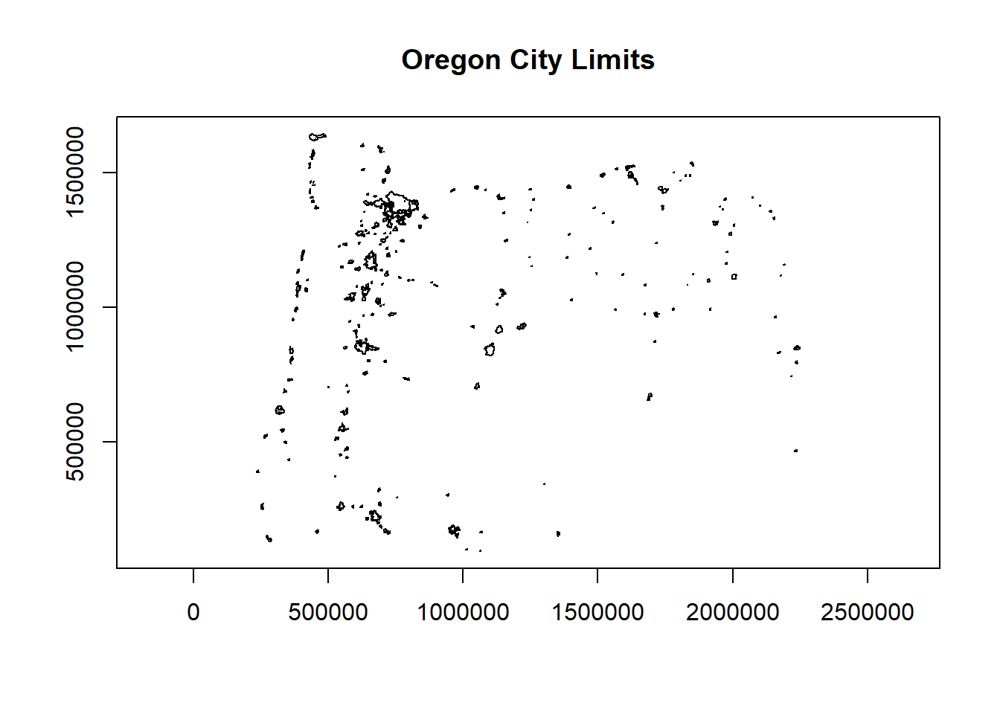
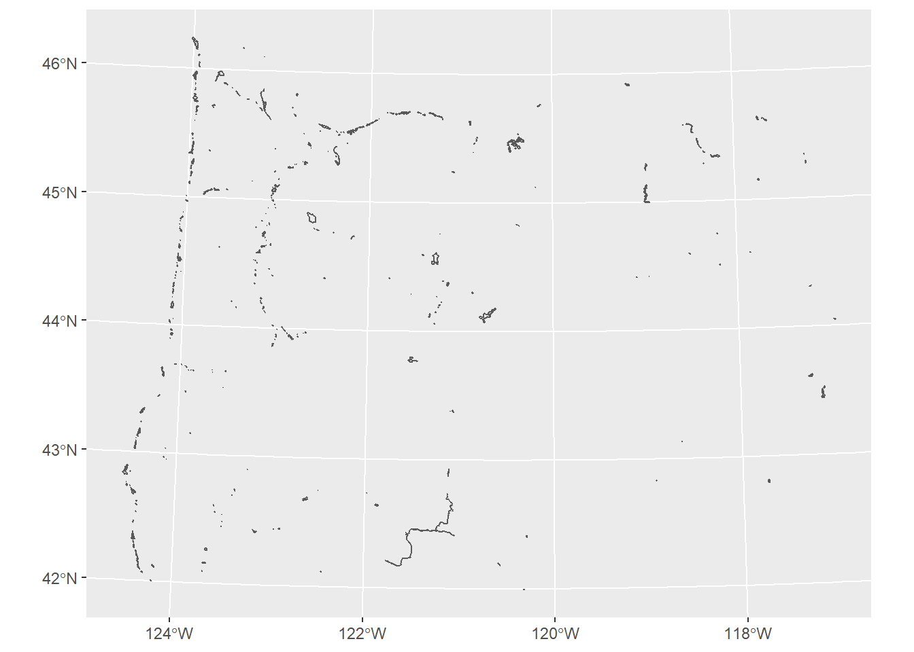

Chapter 2 Reading in Spatial Data
- There are several ways we typically get spatial data into R:
- Load spatial files we have on our machine or from remote source
- Load spatial data that is part of an R package
- Grab data using API (often making use of particular R packages)
- Converting flat files with x,y data to spatial data
- Geocoding data (we saw example of this at beginning)
For reading and writing vector and raster data in R, the three primary packages you’ll use are:
sforrgdalfor vector formats such as ESRI Shapefiles, GeoJSON, and GPX - both packages use OGR, which is a library under the GDAL source tree,under the hoodrasterfor raster formats such as GeoTIFF or ESRI or ASCII grid using GDAL under the hood
We can quickly discover supported I/O vector formats either via sf or rgdal:
library(knitr)
library(sf)
library(rgdal)
print(paste0('There are ',st_drivers("vector") %>% nrow(), ' vector drivers available using st_read or read_sf'))## [1] "There are 89 vector drivers available using st_read or read_sf"kable(head(ogrDrivers(),n=5))| name | long_name | write | copy | isVector |
|---|---|---|---|---|
| AeronavFAA | Aeronav FAA | FALSE | FALSE | TRUE |
| AmigoCloud | AmigoCloud | TRUE | FALSE | TRUE |
| ARCGEN | Arc/Info Generate | FALSE | FALSE | TRUE |
| AVCBin | Arc/Info Binary Coverage | FALSE | FALSE | TRUE |
| AVCE00 | Arc/Info E00 (ASCII) Coverage | FALSE | FALSE | TRUE |
kable(head(st_drivers(what='vector'),n=5))| name | long_name | write | copy | is_raster | is_vector | vsi | |
|---|---|---|---|---|---|---|---|
| ESRIC | ESRIC | Esri Compact Cache | FALSE | FALSE | TRUE | TRUE | TRUE |
| FITS | FITS | Flexible Image Transport System | TRUE | FALSE | TRUE | TRUE | FALSE |
| PCIDSK | PCIDSK | PCIDSK Database File | TRUE | FALSE | TRUE | TRUE | TRUE |
| netCDF | netCDF | Network Common Data Format | TRUE | TRUE | TRUE | TRUE | FALSE |
| PDS4 | PDS4 | NASA Planetary Data System 4 | TRUE | TRUE | TRUE | TRUE | TRUE |
As well as I/O raster formats via sf:
library(knitr)
print(paste0('There are ',st_drivers(what='raster') %>% nrow(), ' raster drivers available'))## [1] "There are 149 raster drivers available"kable(head(st_drivers(what='raster'),n=5))| name | long_name | write | copy | is_raster | is_vector | vsi | |
|---|---|---|---|---|---|---|---|
| VRT | VRT | Virtual Raster | TRUE | TRUE | TRUE | FALSE | TRUE |
| DERIVED | DERIVED | Derived datasets using VRT pixel functions | FALSE | FALSE | TRUE | FALSE | FALSE |
| GTiff | GTiff | GeoTIFF | TRUE | TRUE | TRUE | FALSE | TRUE |
| COG | COG | Cloud optimized GeoTIFF generator | FALSE | TRUE | TRUE | FALSE | TRUE |
| NITF | NITF | National Imagery Transmission Format | TRUE | TRUE | TRUE | FALSE | TRUE |
2.1 Reading in vector data
sf can be used to read numerous file types:
- Shapefiles
- Geodatabases
- Geopackages
- Geojson
- Spatial database files
2.1.1 Shapefiles
Typically working with vector GIS data we work with ESRI shapefiles or geodatabases - here we have an example of how one would read in a shapefile using sf:
# download.file("ftp://ftp.gis.oregon.gov/adminbound/citylim_2017.zip","citylim_2017.zip")
# unzip("citylim_2017.zip", exdir = ".")
library(sf)
citylims <- st_read("citylim_2017.shp")## Reading layer `citylim_2017' from data source
## `C:\Users\mweber\GitProjects\R-User-Group-Spatial-Workshop-2021\citylim_2017.shp'
## using driver `ESRI Shapefile'
## Simple feature collection with 241 features and 14 fields
## Geometry type: MULTIPOLYGON
## Dimension: XY
## Bounding box: xmin: 234278.9 ymin: 94690.89 xmax: 2249460 ymax: 1644089
## Projected CRS: NAD83 / Oregon GIC Lambert (ft)options(scipen=3)
plot(citylims$geometry, axes=T, main='Oregon City Limits') # plot it!
2.1.2 st_read versus read_sf
Above, I didn’t pass any parameters to st_read - typically I would pass the parameters quiet=TRUE and stringsAsFactors=FALSE - why would this be a good practice in general?
2.1.3 Answer
read_sf is an sf alternative to st_read (see this section 1.2.2). Try reading in citylims data above using read_sf and notice difference, and check out help(read_sf). read_sf and writesf` are simply aliases for st_read and st_write with modified default arguments. Big differences are:
- stringsAsFactors=FALSE
- quiet=TRUE
- as_tibble=TRUE
2.1.4 Geodatabases
We use st_read or read_sf similarly for reading in an ESRI file geodatabase feature:
# download.file("ftp://ftp.gis.oregon.gov/adminbound/OregonStateParks_20181010.zip", "OregonStateParks.zip")
# unzip("OregonStateParks.zip", exdir = ".")
library(ggplot2)
fgdb = "OregonStateParks_20181010.gdb"
# List all feature classes in a file geodatabase
st_layers(fgdb)## Driver: OpenFileGDB
## Available layers:
## layer_name geometry_type features fields
## 1 LO_PARKS Multi Polygon 431 15# Read the feature class
parks <- st_read(dsn=fgdb,layer="LO_PARKS")## Reading layer `LO_PARKS' from data source
## `C:\Users\mweber\GitProjects\R-User-Group-Spatial-Workshop-2021\OregonStateParks_20181010.gdb'
## using driver `OpenFileGDB'
## Simple feature collection with 431 features and 15 fields
## Geometry type: GEOMETRY
## Dimension: XY
## Bounding box: xmin: 222821.4 ymin: 88699.71 xmax: 2243413 ymax: 1655108
## Projected CRS: NAD83(2011) / Oregon GIC Lambert (ft)ggplot(parks) + geom_sf()
2.1.5 Geopackages
Another spatial file format is the geopackage. Let’s try a quick read and write of geopackage data. First we’ll read in a geopackage using data that comes with sf using dplyr syntax just to show something a bit different and use read_sf as an alternative to st_read. You may want to try writing the data back out as a geopackage as well.
Quick question: What are a couple advantages of geopackages over shapefiles?
library(dplyr)
nc <- system.file("gpkg/nc.gpkg", package="sf") %>% read_sf() # reads in
glimpse(nc)## Rows: 100
## Columns: 15
## $ AREA <dbl> 0.114, 0.061, 0.143, 0.070, 0.153, 0.097, 0.062, 0.091, 0.11~
## $ PERIMETER <dbl> 1.442, 1.231, 1.630, 2.968, 2.206, 1.670, 1.547, 1.284, 1.42~
## $ CNTY_ <dbl> 1825, 1827, 1828, 1831, 1832, 1833, 1834, 1835, 1836, 1837, ~
## $ CNTY_ID <dbl> 1825, 1827, 1828, 1831, 1832, 1833, 1834, 1835, 1836, 1837, ~
## $ NAME <chr> "Ashe", "Alleghany", "Surry", "Currituck", "Northampton", "H~
## $ FIPS <chr> "37009", "37005", "37171", "37053", "37131", "37091", "37029~
## $ FIPSNO <dbl> 37009, 37005, 37171, 37053, 37131, 37091, 37029, 37073, 3718~
## $ CRESS_ID <int> 5, 3, 86, 27, 66, 46, 15, 37, 93, 85, 17, 79, 39, 73, 91, 42~
## $ BIR74 <dbl> 1091, 487, 3188, 508, 1421, 1452, 286, 420, 968, 1612, 1035,~
## $ SID74 <dbl> 1, 0, 5, 1, 9, 7, 0, 0, 4, 1, 2, 16, 4, 4, 4, 18, 3, 4, 1, 1~
## $ NWBIR74 <dbl> 10, 10, 208, 123, 1066, 954, 115, 254, 748, 160, 550, 1243, ~
## $ BIR79 <dbl> 1364, 542, 3616, 830, 1606, 1838, 350, 594, 1190, 2038, 1253~
## $ SID79 <dbl> 0, 3, 6, 2, 3, 5, 2, 2, 2, 5, 2, 5, 4, 4, 6, 17, 4, 7, 1, 0,~
## $ NWBIR79 <dbl> 19, 12, 260, 145, 1197, 1237, 139, 371, 844, 176, 597, 1369,~
## $ geom <MULTIPOLYGON [°]> MULTIPOLYGON (((-81.47276 3..., MULTIPOLYGON ((~2.1.6 Open spatial data sources
There is a wealth of open spatial data accessible online now via static URLs or APIs - a few examples include Data.gov, NASA SECAC Portal, Natural Earth, UNEP GEOdata, and countless others listed here at Free GIS Data
2.1.7 Spatial data from R packages
There are also a number of R packages written specifically to provide access to geospatial data - below are a few and we’ll step through some examples of pulling in data using some of these packages.
| Package name | Description |
|---|---|
| USABoundaries | Provide historic and contemporary boundaries of the US |
| tigris | Download and use US Census TIGER/Line Shapefiles in R |
| tidycensus | Uses Census American Community API to return tidyverse and optionally sf ready data frames |
| FedData | Functions for downloading geospatial data from several federal sources |
| elevatr | Access elevation data from various APIs (by Jeff Hollister) |
| getlandsat | Provides access to Landsat 8 data. |
| osmdata | Download and import of OpenStreetMap data. |
| raster | The getData() function downloads and imports administrative country, SRTM/ASTER elevation, WorldClim data. |
| rnaturalearth | Functions to download Natural Earth vector and raster data, including world country borders. |
| rnoaa | An R interface to National Oceanic and Atmospheric Administration (NOAA) climate data. |
| rWBclimate | An access to the World Bank climate data. |
Below is an example of pulling in US states using the rnaturalearth package - note that the default is to pull in data as sp objects and we coerce to sf. Also take a look at the chained operation using dplyr. Try changing the filter or a parameter in ggplot.
library(rnaturalearth)
library(dplyr)
library(ggplot2)
states <- ne_states(country = 'United States of America')
states_sf <- st_as_sf(states)
states_sf %>%
dplyr::filter(!name %in% c('Hawaii','Alaska') & !is.na(name)) %>%
ggplot + geom_sf()
2.1.8 Read in raster data
Here we use the getData function in the raster package to download elevation into a RasterLayer and grab administrative boundaries from a database of global administrative boundaries - warning: sometimes getData function has trouble accessing the server and download can be a bit slow. Here we see as well how we can use vector spataio polygon data to crop raster data.
library(raster)
US <- getData("GADM",country="USA",level=2)
Benton <- US[US$NAME_1=='Oregon' & US$NAME_2=='Benton',]
elev <- getData('SRTM', lon=-123, lat=44)
elev <- crop(elev, Benton)
elev <- mask(elev, Benton)
plot(Benton, main="Elevation (m) in Benton County, Oregon", axes=T)
plot(elev, add=TRUE)
plot(Benton, add=TRUE)
2.1.9 Read in OpenStreetMap data
The osmdata package is a fantastic resource for leveraging the OpenStreetMap (OSM) database.
library(osmdata)
library(mapview)
footway <- opq(bbox = "corvallis oregon") %>%
add_osm_feature(key = "highway", value = "footway") %>%
osmdata_sf()
footway <- footway$osm_lines
mapview(footway$geometry)library(osmdata)
library(mapview)
rstrnts <- opq(bbox = "corvallis oregon") %>%
add_osm_feature(key = "amenity", value = "restaurant") %>%
osmdata_sf()
rstrnts <- rstrnts$osm_points
mapview(rstrnts$geometry)We often have flat files, locally on our machine or accessed elsewhere, that have coordinate information which we would like to make spatial:
library(devtools)
library(readr)
library(ggplot2)
# install_github("mhweber/awra2020spatial", force=TRUE)
library(awra2020spatial)
gages = read_csv(system.file("extdata/Gages_flowdata.csv", package = "awra2020spatial"))
gages_sf <- gages %>%
st_as_sf(coords = c("LON_SITE", "LAT_SITE"), crs = 4269, remove = FALSE) %>%
dplyr::select(STATION_NM,LON_SITE, LAT_SITE)
ggplot() + geom_sf(data=gages_sf)